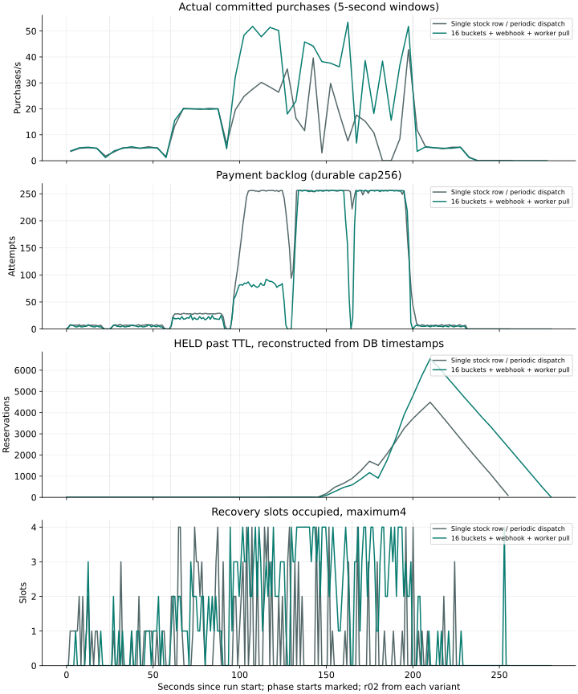

08 / TRANSACTION CAPACITY
혼합 부하에서 예약 수락과 구매 확정이 벌어진 원인
모구시장은 재고 예약 뒤 외부 PG 승인을 확인해야 구매를 확정하므로, 예약 트랜잭션만 측정한 처리량으로 전체 구매 성능을 설명할 수는 없다. 취소·만료·결제·조회가 함께 실행되는 부하를 단계적으로 올리고, 재고 경합을 줄인 뒤 어떤 처리 단계에서 적체가 생기는지 확인했다.
재고 행 경합을 줄인 구조는 400명/초 구간에서도 약 395건/초의 예약을 수락했지만, 구매 확정률은 약 26~29건/초에 머물렀다. 결제 슬롯 포화와 만료 반환 적체가 함께 나타났고, 스케줄러 스레드를 2개로 맞춰도 해결되지 않았다. 다만 이 단계형 결과에는 앞 구간의 적체와 관찰 시간 차이가 섞여 있어 구매 처리 한계로 단정하지 않고, 이후 독립 100·400명/초 비교에서 거래별 관찰 기한을 맞췄다.
혼합 부하의 유입률은 신규 사용자 수를 뜻하며, 각 사용자의 예약 후 행동은 결제 50%·취소 25%·만료 대기 25%로 배정했다. 단계별 입력과 지속 입력은 각각 명시된 기간으로 집계한다. 클라이언트는 결제 접수를 한 번 요청하며 서버의 PG 조회·승인 복구 재시도는 별도로 유지한다.
미확정 결제와 만료 후 재고 반환 대기
만료 워커는 200ms마다 최대 32개의 HELD 예약을 처리하지만, SQL과 커밋 시간이 더해지므로 실효 처리율은 32/0.2보다 낮다. 결제 접수를 거절당한 예약도 TTL까지 HELD에 남기 때문에 높은 부하에서는 원래 계획된 만료 25%보다 반환 작업이 많아진다. PAYMENT_PENDING은 이 만료 대상에서 제외한다. TTL 경과부터 EXPIRED까지의 지연과 미확정 결제 수는 따로 집계했다. 만료 지연은 워밍업을 포함해 결제 시도 없이 EXPIRED가 된 전체 예약, 결과표의 구매·취소·만료 건수는 워밍업을 제외한 측정 요청을 기준으로 한다.
초기 스케줄러 설정: 반복별 만료 지연
| 구조 / 반복 | 측정 구매 | 취소 | 만료 | 불명 결제 | 전체 TTL→EXPIRED p99 s | 최장 s | 실제 HTTP 연결 peak | k6 사전할당 max |
|---|---|---|---|---|---|---|---|---|
| 단일 재고 행 · 1회차 | 2987 | 4331 | 10327 | 0 | 43.291 | 43.749 | 985.0 | 2048 |
| 단일 재고 행 · 2회차 | 3010 | 4543 | 10534 | 0 | 44.651 | 45.042 | 939.0 | 2048 |
| 단일 재고 행 · 3회차 | 2623 | 3949 | 9865 | 0 | 46.024 | 46.443 | 974.0 | 2048 |
| 워커 직접 선점 · 1회차 | 4791 | 5661 | 12179 | 0 | 68.080 | 68.974 | 779.0 | 2048 |
| 워커 직접 선점 · 2회차 | 4823 | 5688 | 12211 | 0 | 67.940 | 68.674 | 797.0 | 2048 |
| 워커 직접 선점 · 3회차 | 4960 | 5678 | 12065 | 0 | 63.688 | 64.340 | 797.0 | 2048 |
TTL이 지나 반환 대상이 되더라도 만료 워커의 처리 여력에 따라 실제 반환은 늦어질 수 있어, 재고 보존을 유지하면서도 가용 수량의 회복이 지연되는 비용이 발생한다. 만료율이 계속 높다면 배치 반환, 공유 예산, DB 쓰기 비용을 추가로 검토해야 하지만, 이 글의 측정 소스에는 아직 그 변경을 적용하지 않았다.
만료 처리와 결제 복구의 스케줄러 경합
단일 행 기준의 400건/초 구간에서는 워커가 4개여도 work timer 합계가 벽시계 1초당 약 0.38초에 그쳤다. 외부 HTTP는 약 0.06초였고 pool timeout은 0건이었다. 만료 처리와 결제 작업 배분이 같은 스케줄러를 사용하는 코드에 주목했다. 실행한 Spring Boot 3.5의 기본 스케줄러는 스레드 1개여서, 만료 작업이 배분을 지연시키는지 별도 실험으로 확인했다. 실행 버전 Boot3.5의 기본 scheduler는 1 thread
동일한 기준 코드에서 SPRING_TASK_SCHEDULING_POOL_SIZE만 1과 2로 변경했다. 초당 10건으로 10초 워밍업한 뒤 초당 400건을 40초간 보냈고, 양쪽에서 32/40/48초에 jcmd Thread.print를 수집했다. 추가 계측이 들어간 설정별 1회 진단으로, 아래 3회 구조 비교와는 구분했다. 표의 실제 구매/s는 측정 창의 terminal_at, 최종 구매는 그 창에 유입된 거래의 최종 상태를 기준으로 한다.
| scheduler | 신규 예약/s | 구간 구매/s | cohort 최종 구매 | 만료 p99s | expiry stack | dispatch stack | dropped | 근거 |
|---|---|---|---|---|---|---|---|---|
| 1 | 183.68 | 10.15 | 662 | 29.241 | 2 | 0 | 0 | 단일 재고 행 · 측정 결과 |
| 2 | 206.32 | 25.80 | 1280 | 28.196 | 3 | 0 | 0 | 단일 재고 행 · 측정 결과 |
스케줄러 스레드 1개 / threads-40.txt에서 발췌:
"scheduling-1" #37 [39939] prio=5 os_prio=31 cpu=574.47ms elapsed=40.77s tid=0x000000081ad04700 nid=39939 runnable [0x00000001737f1000]
java.lang.Thread.State: RUNNABLE
at sun.nio.ch.Net.poll(java.base@21.0.12.1/Native Method)
...
at market.Ledger.release(Ledger.java:109)
at market.Ledger.lambda$expire$5(Ledger.java:118)
at market.Ledger$$Lambda/0x0000007001764248.get(Unknown Source)
at market.Ledger.lambda$transaction$0(Ledger.java:23)
at market.Ledger$$Lambda/0x00000070016e4660.doInTransaction(Unknown Source)
at market.Ledger.transaction(Ledger.java:23)
at market.Ledger.expire(Ledger.java:118)
at market.Recovery.expiry(Recovery.java:34)
at org.springframework.scheduling.support.ScheduledMethodRunnable.runInternal(ScheduledMethodRunnable.java:130)
at org.springframework.scheduling.support.ScheduledMethodRunnable.lambda$run$2(ScheduledMethodRunnable.java:124)
at org.springframework.scheduling.support.ScheduledMethodRunnable$$Lambda/0x00000070016d4078.run(Unknown Source)
at org.springframework.scheduling.support.ScheduledMethodRunnable.run(ScheduledMethodRunnable.java:124)스케줄러 스레드 2개 / threads-32.txt에서 발췌:
"scheduling-1" #37 [39683] prio=5 os_prio=31 cpu=295.91ms elapsed=32.64s tid=0x0000000ca7033800 nid=39683 runnable [0x000000016f865000]
java.lang.Thread.State: RUNNABLE
at sun.nio.ch.Net.poll(java.base@21.0.12.1/Native Method)
...
at market.Ledger.release(Ledger.java:109)
at market.Ledger.lambda$expire$5(Ledger.java:118)
at market.Ledger$$Lambda/0x000000060175f9a8.get(Unknown Source)
at market.Ledger.lambda$transaction$0(Ledger.java:23)
at market.Ledger$$Lambda/0x00000006016deb40.doInTransaction(Unknown Source)
at market.Ledger.transaction(Ledger.java:23)
at market.Ledger.expire(Ledger.java:118)
at market.Recovery.expiry(Recovery.java:34)
at org.springframework.scheduling.support.ScheduledMethodRunnable.runInternal(ScheduledMethodRunnable.java:130)
at org.springframework.scheduling.support.ScheduledMethodRunnable.lambda$run$2(ScheduledMethodRunnable.java:124)
at org.springframework.scheduling.support.ScheduledMethodRunnable$$Lambda/0x00000006016d4ba0.run(Unknown Source)
at org.springframework.scheduling.support.ScheduledMethodRunnable.run(ScheduledMethodRunnable.java:124)스택 수는 수집한 스케줄러 스레드 단면에서 해당 메서드를 발견한 횟수이며, CPU 프로파일의 시간 비율은 아니다. 스케줄러를 분리해도 외부 호출 워커 수, DB pool, 재고 행 구조와 커밋 방식은 그대로다. 따라서 이 설정 진단과 워커 직접 선점의 3회 비교를 분리해 원인을 판단했다.
스케줄러 스레드를 2개로 늘린 후 비교
스케줄러가 예약 32건을 만료 처리하는 동안 복구 작업 배분도 지연됐다. 이 설정 차이를 제거하려고 양쪽 스케줄러 스레드를 2개로 맞춘 뒤 기존 입력·연결 상한·워커 4개·DB·내구성을 유지해 3회씩 교대로 재측정했다. 아래는 공통 설정 보완 후의 결과이며, 스레드 1개로 측정한 앞선 p99와 따로 표시했다.
표는 실행별 지표의 중앙값과 최소–최대다. 구매 수는 워밍업을 제외한 입력 거래의 최종 상태, 승인→구매 지연은 PG 효과 시각과 DB 종결 시각으로 계산했다. 만료 p99는 워밍업을 포함한 EXPIRED 거래의 TTL 경과 이후 지연이다. 이 6회는 모두 Battery 전원에서 실행했고 발생기·VM·브라우저의 배경 비용과 전원 기록을 보존했다.
| 구현 | 최종 구매 | 승인→구매 p99 s | 최장 s | 만료 p99 s | 불명 1·2·3회차 | dropped 1·2·3회차 |
|---|---|---|---|---|---|---|
| 단일 행 | 3568.00 (3484.00–3888.00) | 4.58 (4.43–4.59) | 4.77 (4.58–4.88) | 30.50 (29.92–32.38) | 0/0/0 | 0/0/0 |
| 워커 직접 선점 | 4955.00 (4934.00–5159.00) | 4.30 (4.17–4.70) | 5.37 (4.94–5.63) | 71.67 (64.02–72.29) | 0/0/0 | 0/0/0 |
공통 스케줄러 2개: 단계별 전체 결과
| 구현 | 단계 | 목표/s | 신규 예약/s | 접수 202/s | 구간 구매/s | 단계 이후 구매 |
|---|---|---|---|---|---|---|
| 단일 행 | 1단계 · 10명/초 | 10 | 10.03 (10.03–10.03) | 5.00 (5.00–5.00) | 4.73 (4.70–4.73) | 8.00 (8.00–9.00) |
| 단일 행 | 2단계 · 40명/초 | 40 | 40.03 (40.03–40.03) | 20.00 (20.00–20.00) | 18.97 (18.93–19.07) | 31.00 (28.00–32.00) |
| 단일 행 | 3단계 · 100명/초 | 100 | 100.03 (99.97–100.03) | 33.53 (33.43–34.70) | 24.87 (24.80–26.07) | 259.00 (257.00–262.00) |
| 단일 행 | 4단계 · 200명/초 | 200 | 159.07 (158.97–191.73) | 32.33 (32.30–33.93) | 26.80 (26.67–27.83) | 261.00 (261.00–262.00) |
| 단일 행 | 5단계 · 400명/초 | 400 | 166.57 (163.00–193.70) | 23.10 (20.37–30.97) | 27.43 (24.57–27.67) | 29.00 (25.00–237.00) |
| 단일 행 | 6단계 · 10명/초 (감속) | 10 | 10.03 (10.00–10.03) | 5.00 (5.00–5.00) | 4.73 (4.73–6.23) | 8.00 (8.00–8.00) |
| 워커 직접 선점 | 1단계 · 10명/초 | 10 | 10.03 (10.03–10.03) | 5.00 (5.00–5.00) | 4.80 (4.80–4.80) | 6.00 (6.00–6.00) |
| 워커 직접 선점 | 2단계 · 40명/초 | 40 | 40.00 (40.00–40.03) | 20.00 (20.00–20.00) | 19.27 (19.27–19.30) | 22.00 (21.00–22.00) |
| 워커 직접 선점 | 3단계 · 100명/초 | 100 | 100.03 (100.03–100.03) | 50.00 (50.00–50.00) | 47.00 (46.47–47.10) | 90.00 (87.00–106.00) |
| 워커 직접 선점 | 4단계 · 200명/초 | 200 | 200.03 (200.00–200.03) | 50.50 (47.90–54.23) | 41.77 (39.10–45.47) | 263.00 (262.00–264.00) |
| 워커 직접 선점 | 5단계 · 400명/초 | 400 | 395.07 (395.00–395.40) | 36.57 (34.67–37.73) | 27.83 (25.93–29.03) | 262.00 (261.00–262.00) |
| 워커 직접 선점 | 6단계 · 10명/초 (감속) | 10 | 10.00 (10.00–10.03) | 5.00 (5.00–5.00) | 4.80 (4.80–4.83) | 6.00 (5.00–6.00) |
| 구현 | 관측 대상 프로세스와 VM의 전체 CPU s | 혼합 CPU s/1000구매 | 기록 PG호출/구매 | k6 CPU s | k6 peak MiB | 풀 대기 peak |
|---|---|---|---|---|---|---|
| 단일 행 | 488.73 (488.34–529.81) | 133.24 (132.85–136.26) | 2.47 (2.36–2.55) | 25.75 (25.66–27.67) | 715.02 (713.36–721.23) | 0.00 (0.00–0.00) |
| 워커 직접 선점 | 770.45 (740.58–773.16) | 147.11 (146.50–152.95) | 2.54 (2.40–2.55) | 35.94 (35.32–36.35) | 709.45 (709.05–710.48) | 0.00 (0.00–0.00) |
스케줄러 스레드를 2개로 맞춘 결과, 입력 거래의 최종 구매는 기준 3568.00건(3484.00–3888.00), 후보 4955.00건(4934.00–5159.00)이었다. 반면 만료 p99는 각각 30.50초(29.92–32.38)와 71.67초(64.02–72.29)였다. 더 많은 예약을 수락한 후보에서 만료 작업도 늘었다. 400건/초 구간에는 구매율 정체와 만료 적체 증가가 함께 나타나 이 설정의 지속 처리 범위를 벗어났다. 이후 낮은 부하에서 모두 처리되더라도 과부하 동안 발생한 반환 지연은 남는다.

재고 경합 감소 이후의 결제 슬롯 카운터 행 대기
스케줄러 스레드 2개로 실행한 3회 원본에서 100/400건·초 구간을 각각 집계했다. work와 PG 시간은 timer 누적 초의 차이를 표본의 경과 시간으로 나눈 값이며 CPU 시간이 아니다. work에는 선점 이전 시간이 빠지고 PG 호출 시간은 포함되므로 두 값을 더하지 않았다. 슬롯 수는 표본 평균, 잠금 수는 해당 단계에서 관측한 최대 대기 트랜잭션 수다. 표의 범위는 세 실행 사이의 변동이다.
| 구현 | 입력/s | claim/s | work s/s | PG s/s | 슬롯 평균/4 | 재고 대기 peak | budget 대기 peak |
|---|---|---|---|---|---|---|---|
| 단일 행 | 100 | 55.36 (55.35–58.17) | 1.33 (1.21–1.36) | 0.19 (0.19–0.20) | 1.59 (1.45–1.59) | 1.00 (0.00–2.00) | 0.00 (0.00–1.00) |
| 단일 행 | 400 | 54.39 (52.89–55.22) | 1.44 (1.35–1.45) | 0.21 (0.20–0.22) | 1.55 (1.52–1.86) | 6.00 (6.00–6.00) | 1.00 (0.00–1.00) |
| 워커 직접 선점 | 100 | 114.40 (101.66–117.04) | 2.70 (2.63–2.73) | 0.42 (0.37–0.42) | 3.24 (3.21–3.52) | 0.00 (0.00–0.00) | 1.00 (0.00–1.00) |
| 워커 직접 선점 | 400 | 61.56 (56.93–65.11) | 2.83 (2.81–2.92) | 0.31 (0.30–0.31) | 3.64 (3.41–3.68) | 1.00 (1.00–3.00) | 18.00 (16.00–19.00) |
| 구현 | 전체 COMMIT 누적s | pending 증가 UPDATE 누적s | 해당 UPDATE 수 |
|---|---|---|---|
| 단일 행 | 115.75 (74.86–123.02) | 2.25 (1.41–2.50) | 5341.00 (5331.00–6348.00) |
| 워커 직접 선점 | 222.15 (181.08–248.71) | 72.66 (63.22–83.63) | 11387.00 (11378.00–11389.00) |
재고 행 대기를 줄인 뒤에도 budgets의 단일 행에는 결제 접수·종결·inbox 수 변경이 집중돼, 높은 부하에서 실제 잠금 대기와 UPDATE 누적 시간, 워커 4개의 점유율이 함께 높아졌다. 여기에 결제 접수를 거절당한 예약의 HELD 만료 작업도 추가됐다. 다음 원인을 전역 카운터 행, 거래별 여러 커밋, 만료 처리로 좁힐 수 있었으며 PG HTTP 지연만으로는 설명되지 않았다. 다만 예산 행은 미확정 결제 상한을 보장하므로 삭제할 수 없어, 같은 상한·거래 보장을 유지하는 예산 분리와 만료 배치를 후속 대안으로 두고 구현과 장애 시험으로 확인하기로 했다.
CPU 관찰 구간에 워밍업과 유입 종료 후 처리가 들어 있으므로 분모에도 같은 구간의 전체 구매를 사용했다. 최종 구매 수와 각 시간 구간의 구매 확정률은 별도 지표다. PG 원장에 기록되기 전 503으로 거절된 호출은 앱 메트릭에서 확인했다. 구조 선택에는 p99 외에 만료 지연·최장 거래·미해결 수와 예약·편향·장애 시험 결과를 함께 사용했다.
100건/초 혼합 부하의 90초 지속 시험
단계별 30초 측정을 보완하려고 초당 100 iteration을 90초간 유지하며 두 구현을 각각 3회 실행하되, 초당 10건·20초 워밍업은 본 측정에서 제외했다. 취소 25%·만료 25%·결제 시도 50%, PG 효과 지연 0.3~1초와 응답·웹훅 유실 20%는 앞선 혼합 조건과 같다. 스케줄러 스레드 2개, HTTP 연결 2048, pool 48개, 워커 4개, 미확정 결제 256건, 동시 입장 6/24개도 유지했다. 실제 PG의 서명 없는 테스트 알림을 조회 신호로 처리하는 예외가 포함된 버전이지만, 이 측정에서는 비활성화했다. 앞선 예약 단독·혼합 시험과는 빌드가 달라 결과를 구분했다. 이후 변경한 거래별 조회 신호 제한 응답(200→429)도 이 측정 결과에 소급하지 않았다.
지속 부하에서는 초당 100건 입력 동안 구매 확정률과 적체의 추세를 관찰했다. 실제 구매/s는 90초 구간의 DB terminal_at으로 계산하고, cohort 구매는 그 구간에 예약한 거래가 관찰 종료까지 구매한 수다. 따라서 유입 종료 뒤 확정된 거래는 90초 내 구매에 포함하지 않았으며, HTTP 수에도 결제 준비와 상태 확인 등의 요청이 들어 있어 이를 구매 수로 볼 수는 없다.
90초 지속 입력: 반복별 거래·지연
| 구조 / 반복 | 시작 iteration | 완료 iteration | HTTP | 영속 예약 | 결제 202 | cohort 구매 | 실제 구매/s | 종료 뒤 구매 | 복구 p99s | 만료 p99s | 불명 | dropped |
|---|---|---|---|---|---|---|---|---|---|---|---|---|
| 단일 행 1회차 | 9001 | 9001 | 53587 | 9001 | 2810 | 2810 | 28.37 | 257 | 4.181 | 0.289 | 0 | 0 |
| 단일 행 2회차 | 9001 | 9001 | 53608 | 9000 | 2813 | 2813 | 28.38 | 259 | 4.186 | 0.294 | 0 | 0 |
| 단일 행 3회차 | 9001 | 9001 | 53614 | 8999 | 2811 | 2811 | 28.36 | 259 | 4.215 | 0.292 | 0 | 0 |
| 워커 직접 선점 1회차 | 9000 | 9000 | 50193 | 9000 | 4500 | 4500 | 49.04 | 86 | 1.433 | 0.245 | 0 | 0 |
| 워커 직접 선점 2회차 | 9000 | 9000 | 50173 | 9000 | 4500 | 4500 | 49.03 | 87 | 1.427 | 0.244 | 0 | 0 |
| 워커 직접 선점 3회차 | 9000 | 9000 | 51129 | 9000 | 4500 | 4500 | 48.94 | 95 | 1.397 | 0.250 | 0 | 0 |

90초 지속 입력: 반복별 CPU·적체
| 구조 / 반복 | 측정 pending peak | 전체 만료적체 peak | 전체 CPU s | CPU s/1000구매 | k6 CPU s | k6 peak MiB | 관측 전원 |
|---|---|---|---|---|---|---|---|
| 단일 행 1회차 | 256 | 13 | 305.48 | 104.98 | 15.03 | 642.5 | Battery |
| 단일 행 2회차 | 256 | 11 | 316.35 | 108.60 | 15.74 | 641.3 | Battery |
| 단일 행 3회차 | 256 | 14 | 321.09 | 110.30 | 15.78 | 642.2 | Battery |
| 워커 직접 선점 1회차 | 84 | 6 | 447.34 | 97.25 | 17.91 | 645.8 | Battery |
| 워커 직접 선점 2회차 | 84 | 6 | 456.02 | 99.14 | 18.34 | 643.1 | Battery |
| 워커 직접 선점 3회차 | 89 | 5 | 484.17 | 105.25 | 20.12 | 644.2 | Battery |
90초 구간의 실제 구매는 기준 28.36–28.38건/초에서 후보 48.94–49.04건/초로 늘었다. 후보는 매회 결제를 시도한 4500건을 최종 구매로 수렴시켰고, 측정 pending 최고는 84–89로 256 상한에 닿지 않았다. 기준은 pending256에 도달해 일부 결제 접수를 거절했고 그 예약은 만료됐다. 이 입력에서 후보의 만료 p99는 0.24–0.25초였으며 400/s 과부하에서 보인 수십 초 적체와 달랐다.
구매 처리량이 늘면서 자원 사용도 함께 증가해, 후보의 전체 CPU 중앙값은 기준보다 44.2% 높았다. 입력 종료 뒤 완료된 구매는 별도로 표시했다. 초당 100건의 이 결과를 더 느린 PG나 더 높은 부하에 적용하려면 해당 조건에서 다시 측정해야 한다.
CPU 구간에 워밍업·잔여 처리·관측 비용이 들어 있으므로 구매당 비용의 분모에도 같은 구간의 전체 구매를 사용했다. 초당 100건의 구매 비율과 적체 추세는 초당 400건에서 발생한 만료 적체와 구분한다. 이 90초 입력의 절반만 결제를 시도하며, 외부 HTTP가 200ms인 조건이나 데이터가 장기간 쌓인 환경의 지연까지 보장하지는 않는다. 원본에서 직접 재계산한 요약과 각 실행 자료를 함께 연결했다. 직접 재계산한 요약
PG 중단 없는 혼합 부하의 측정 조건
신규 예약 이후 행동은 취소 25%, 15초 TTL 만료 대기 25%, 테스트 PG 인증 준비와 결제 시도 50%로 구성했다. PG가 HTTP 503을 반환하거나 프로세스가 중단되는 장애는 이 시험에 넣지 않았지만, 승인 응답 유실 20%, 웹훅 유실 20%, 승인 효과 적용 지연 0.3~1.0초는 유지했다. 이 단계의 하네스에서는 두 유실 그룹이 일부 겹쳐 독립 확률 분포는 아니었다. 응답을 받지 못한 결제는 영속 주기 조회로 구매를 복구한다.
초당 10건으로 20초간 워밍업한 뒤 10→40→100→200→400→10 iteration/s를 각 30초간 실행하고, 두 구현의 순서를 교대하며 각각 3회 측정했다. HTTP 연결 상한 2048, 스레드 48개, DB pool 48개, PG 워커 4개, 미확정 결제 상한 256건, DB 2CPU/1GiB와 커밋 내구성은 동일하다. API 동시 입장 제한은 앞선 민감도 시험에 따라 단일 행 기준 6개, 후보 24개를 사용했다. 이전 HTTP 연결 상한 512에서 먼저 요청이 막힌 결과와 구분하려고, 이 실험에서는 양쪽 연결 상한을 함께 늘렸다. 업무 스레드 수나 DB pool은 그대로다.
k6는 단계마다 1024 VU를 미리 할당했다. 단계 간격은 5초, gracefulStop은 10초여서 전체 사전 할당 상한은 두 단계 합계까지 올라갈 수 있다. 실제 시작률, dropped iteration, 완료·HTTP 수와 발생기의 CPU/RSS를 기록했다. 한 iteration에서 상태 조회 등 여러 HTTP를 보내므로 400 iteration/s는 400 HTTP/s와 다르다. HTTP 연결 상한 512의 장애 비교와는 실행 조건이 달라 별도로 집계했다.
예약·결제 접수·구매 확정·후속 구매의 구분
예약/s는 해당 단계에 들어온 요청 중 고유 201 예약 수를 단계 시간으로 나눈 값이며, 202/s는 DB에 저장된 결제 접수율이다. 실제 구매/s는 그 시간 구간에 terminal_at이 기록된 구매 수로, 이전 단계에서 들어온 거래가 뒤늦게 완료된 경우도 포함한다. 단계 이후 구매는 해당 단계에서 예약했지만 종료 뒤 확정된 거래를 따로 센 것이다. 아래 표는 각 지표의 3회 중앙값과 최소–최대 범위다.
초기 스케줄러 설정: 단계별 전체 결과
| 구현 | 단계 | 목표/s | 실제 시작/s | 신규 예약/s | 접수 202/s | 실제 구매/s | 단계 이후 구매 | dropped 1·2·3회차 |
|---|---|---|---|---|---|---|---|---|
| 단일 행 | 1단계 · 10명/초 | 10 | 10.03 (10.00–10.03) | 10.03 (10.00–10.03) | 5.00 (5.00–5.00) | 4.73 (4.73–4.73) | 8.00 (8.00–8.00) | 0/0/0 |
| 단일 행 | 2단계 · 40명/초 | 40 | 40.03 (40.00–40.03) | 40.03 (40.00–40.03) | 20.00 (20.00–20.00) | 18.90 (18.90–18.93) | 33.00 (32.00–33.00) | 0/0/0 |
| 단일 행 | 3단계 · 100명/초 | 100 | 100.03 (100.00–100.03) | 100.03 (100.00–100.03) | 34.80 (32.33–34.90) | 26.17 (23.63–26.27) | 259.00 (259.00–261.00) | 0/0/0 |
| 단일 행 | 4단계 · 200명/초 | 200 | 200.00 (200.00–200.03) | 198.60 (182.40–198.87) | 25.60 (16.57–25.60) | 19.80 (12.53–19.87) | 256.00 (256.00–256.00) | 0/0/0 |
| 단일 행 | 5단계 · 400명/초 | 400 | 400.00 (400.00–400.00) | 229.47 (205.40–243.97) | 9.07 (8.53–9.93) | 8.03 (7.33–8.67) | 256.00 (256.00–262.00) | 0/0/0 |
| 단일 행 | 6단계 · 10명/초 (감속) | 10 | 10.03 (10.00–10.03) | 10.03 (10.00–10.03) | 5.00 (5.00–5.00) | 6.17 (5.50–11.93) | 7.00 (7.00–7.00) | 0/0/0 |
| 워커 직접 선점 | 1단계 · 10명/초 | 10 | 10.03 (10.03–10.03) | 10.03 (10.03–10.03) | 5.00 (5.00–5.00) | 4.80 (4.77–4.80) | 6.00 (6.00–7.00) | 0/0/0 |
| 워커 직접 선점 | 2단계 · 40명/초 | 40 | 40.00 (40.00–40.03) | 40.00 (40.00–40.03) | 20.00 (20.00–20.00) | 19.23 (19.20–19.23) | 23.00 (23.00–24.00) | 0/0/0 |
| 워커 직접 선점 | 3단계 · 100명/초 | 100 | 100.00 (100.00–100.03) | 100.00 (100.00–100.03) | 50.00 (50.00–50.00) | 47.00 (45.53–47.03) | 90.00 (89.00–134.00) | 0/0/0 |
| 워커 직접 선점 | 4단계 · 200명/초 | 200 | 200.00 (200.00–200.03) | 199.93 (199.57–200.03) | 46.40 (45.33–50.87) | 37.50 (36.63–42.00) | 266.00 (261.00–267.00) | 0/0/0 |
| 워커 직접 선점 | 5단계 · 400명/초 | 400 | 400.03 (400.00–400.03) | 396.67 (394.70–397.40) | 34.37 (34.37–34.47) | 25.73 (25.70–25.80) | 260.00 (259.00–260.00) | 0/0/0 |
| 워커 직접 선점 | 6단계 · 10명/초 (감속) | 10 | 10.03 (10.00–10.03) | 10.03 (10.00–10.03) | 5.00 (5.00–5.00) | 4.80 (4.73–4.80) | 6.00 (6.00–8.00) | 0/0/0 |

처리량이 정체된 구간에서 미확정 결제 256건 도달 여부, 워커 4개의 점유, SQL·PG 호출 시간, 커넥션 풀 대기와 부하 발생기의 미시작 요청을 함께 확인했다. 마지막 초당 10건 구간에서는 과부하 후 적체가 해소되는지 관찰했다. 미확정 거래는 DB에 유지한 채 처리 결과를 집계했다.
구매 증가에 따른 전체 CPU 비용
초기 스케줄러 설정의 CPU·발생기 비용
| 구현 | 관측 대상 프로세스와 VM의 전체 CPU s | 혼합 CPU s/1000구매 | k6 CPU s | k6 peak MiB | DB quota throttle s | pool 대기 peak |
|---|---|---|---|---|---|---|
| 단일 행 | 502.00 (445.00–504.37) | 162.62 (162.18–163.42) | 25.59 (22.65–25.90) | 714.58 (709.91–717.55) | 0.00 (0.00–0.00) | 0.00 (0.00–0.00) |
| 워커 직접 선점 | 722.59 (712.79–740.89) | 146.42 (145.73–146.78) | 34.65 (34.62–34.83) | 708.92 (705.80–710.12) | 0.23 (0.10–0.26) | 2.00 (0.00–4.00) |
워밍업·구간 간격·잔여 처리 시간을 포함한 CPU를 같은 창의 전체 구매로 나눴다. 취소·만료·실패·조회 비용도 들어 있으므로 구매 한 건만 단독 실행한 비용과는 다르다. VM/backend와 내부 DB cgroup은 중복 합산하지 않았다. PG 시뮬레이터도 HTTP 처리 슬롯 32개, SQLite WAL/FULL, 단일 백그라운드 웹훅 전달 루프를 사용한다. PG·부하 발생기·공유 디스크의 처리 여력이 결과에 영향을 줄 수 있어 앱 단독 최대 TPS로 해석할 수 없다.
이 비교의 구조 선택에는 정상 혼합 부하, HTTP 503 이후 적체 복구, 실제 SIGSTOP, 외부 HTTP 200ms 조건을 각각 반영했다. 성능 비교와 별도로 결제 결과 불명, 멱등성, 장기 REVIEW에 대한 검증도 유지했다. 다른 부하·장애와 합친 판단
후속 비교와 해석 범위
이 글 이후에는 종결 충돌 보존과 KRW 금액 검증을 공통 수정하고, 기존 두 구조와 만료 배치 구조를 결제 재시도·최초 결제 고객·재고 반환 조건에서 다시 비교했다. 최신 결과는 아래 후속 글에서 다루되, 앞선 결제 슬롯 관리 구조 비교의 15% 기준과 후속 비교의 사전 기준이 다르므로 서로 다른 조건의 결과를 합산하지 않았다. 결제 재시도·최초 결제 고객의 구매 결과·재고 반환 비교
후속 비교에서는 종결 거래의 외부 명령 허가 결함을 모든 비교군에 수정하고 사용자·버킷·행동·PG 장애 입력을 독립화했다. 100/400건·초를 각각 독립 3회 측정한 결과와 결함 수정은 아래 글에 정리했다. 선행 단계형 혼합 시험의 입력은 16개 버킷 중 결제 8개·취소 4개·만료 4개로 행동이 묶여 있어, 당시 수치와 선택은 그 조건에 한정해 해석한다. 선행 구매 결과와 해당 비교의 선택 · 종결 거래 결함과 수정